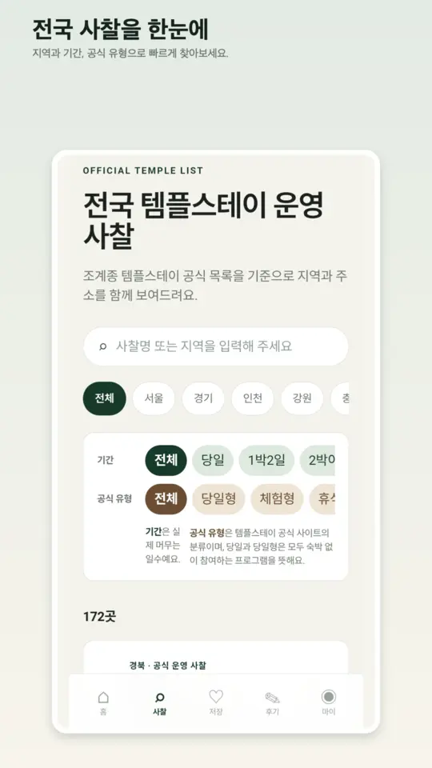

ANDROID DEVELOPER
만들고, 출시하고,
만들고, 출시하고,
운영하며 배웁니다
Kotlin과 Compose로 앱을 만들고 Google Play·App Store에 직접 출시해 운영해 왔습니다.
프로젝트 보기 →
프로젝트
카드를 누르면 자세한 내용을 볼 수 있어요공고와 내 경험
텀블벅 Android 앱 포지션 기준| 공고 키워드 | 내 경험 |
|---|---|
| Kotlin | 우아한테크코스 미션 전반, 도그널, 쇼츠 그만 댓글 그만 |
| Jetpack Compose | 쇼핑 앱 미션, 도그널(Compose Multiplatform), 쇼츠 그만 댓글 그만 |
| MVVM | ViewModel + UiState(StateFlow) 구조의 쇼핑 앱 미션, MVVM+MVI 구조의 도그널 |
| 앱 배포·운영 | 템플모아를 Google Play와 App Store에 출시하고 Sentry 모니터링과 dev/main 분리 배포로 운영 |
| 딥링크 | 쇼핑 앱 미션에서 알림을 눌러 결제 화면으로 바로 진입하는 딥링크 구현 |
| 생성형 AI 활용 | Gemini Canvas로 해커톤 작품을 구현하고, 개발 전반에 Claude 등 생성형 AI 활용 |
| WebView 하이브리드 앱 우대 | 템플모아: 웹을 Capacitor로 감싼 하이브리드 앱, AdMob·스플래시는 Android 네이티브로 직접 구현 |
| Jetpack 라이브러리 우대 | 쇼핑 앱 미션에서 Room, Navigation 사용 |
기술
직접 사용해 본 것만 적었어요
KotlinJetpack ComposeCompose MultiplatformKotlin MultiplatformMVVMStateFlowRoomRetrofit · OkHttpNavigationSupabaseJava (Android 네이티브 플러그인)AdMobCapacitorNext.js · ReactCloudflareSentryAndroid StudioXcodeGit · GitHubUnity · C#
소개
- 2025.01 개발 시작비전공으로 개발을 처음 접했어요.
- 2025.03 ~ 2025.09 · Unity 부트캠프 13기KDT 국비지원 과정. C#, 컴퓨터 기초, Unity 6.
- 2026.02 ~ 2026.10 · 우아한테크코스 AndroidKotlin, Compose, MVVM 미션과 팀 프로젝트, 해커톤 3위.
- 2026.08 · 템플모아 출시Google Play와 App Store에 출시하고 계속 개선 중이에요.
- 그 전에는소재 기업에서 은페이스트 연구개발(2021), 법무법인 사무보조(2024)를 했어요.
함께 이야기해요
경력 요건에는 못 미치지만, 출시부터 운영까지 직접 해본 경험으로 기여하고 싶어요.